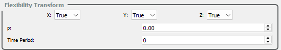
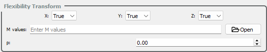

Flexibility Transform#
The FlapKine application supports flexible body transformations in addition to standard translation and rotation. This feature enables realistic modeling of deformable structures such as flapping wings. Flexibility is introduced via spatially varying transformation matrices applied per-vertex, enabling time-dependent and location-specific deformation.
Transform Type |
Mode |
Description |
|---|---|---|
Flexibility |
|
No deformation; the object behaves as a rigid body. |
|
First mode of flexibility inspired by Dong et al. [1] where deformation occurs only along the wing thickness direction. Described in detail below. |
|
|
(Description to be added in future.) |
Mathematical Formulation#
Flexibility is modeled by applying a deformation matrix to each vertex in the body frame. The resulting transformation is expressed as:
where:
\(\mathbf{P}_{B}\) is position vector, representing a vertex in the local
Spriteframe.\(\mathbf{F}_{B}\) is the flexibility transformation matrix, defined as:
\[\begin{split}\mathbf{F}_{B} = \begin{bmatrix} 1 & 0 & 0 & f_x(x_B, y_B, z_B) \\ 0 & 1 & 0 & f_y(x_B, y_B, z_B) \\ 0 & 0 & 1 & f_z(x_B, y_B, z_B) \\ 0 & 0 & 0 & 1 \end{bmatrix}\end{split}\]
Each function \(f_x\), \(f_y\), and \(f_z\) defines the vertex-specific deformation in the respective directions based on the local body coordinates.
Flexibility Type 1: Flapping-Induced Deformation#
This mode simulates a time-dependent spanwise deformation modeled after flapping wing kinematics. Assuming:
Wing span along \(\hat{\mathbf{e}}_1\)
Chord along \(\hat{\mathbf{e}}_2\)
Thickness along \(\hat{\mathbf{e}}_3\)
The deformation is introduced only along \(\hat{\mathbf{e}}_3\), defined by:
The deflection \(h_m(x_B, y_B, t)\) is computed using a piecewise function over the span (normalized coordinate \(x_B\)):
Where:
\(p\) is a user-defined inflection point on the span.
\(h_m(y_B, t)\) is the spanwise-time deformation function:
\[h_m(y_B, t) = \frac{C(r) \cdot h_{m,\text{root}}}{\tanh(C_{\tau})} \cdot \frac{\tanh(C_{\tau} \cdot \sin(2\pi f t))}{C_{R}} \cdot \left(1 - \frac{r}{R} \right)\]
Here:
\(C(r)\) is the local chord length at spanwise position \(r\)
\(h_{m,\text{root}}\) is the root deflection amplitude
\(f\) is the flapping frequency
\(C_{\tau}\) is the temporal shaping factor
\(R\) is the total wing span
\(C_R\) is the reference chord
Input Options#
When using Flexibility Type 1, users must provide the following inputs to configure the deformation behavior, as illustrated below:
{kind=link}

Axis Alignment Options:
Specify the direction in which the thickness of the wing is aligned. Only one of the following flags should be set to True:
x– Thickness is aligned along the \(\hat{\mathbf{e}}_1\) (x-axis); wing span aligns with the y-axis (\(\hat{\mathbf{e}}_2\)), and chord with \(\hat{\mathbf{e}}_3\).y– Thickness is aligned along the \(\hat{\mathbf{e}}_2\) (y-axis); wing span and chord lie in orthogonal directions accordingly.z– Thickness is aligned along the \(\hat{\mathbf{e}}_3\) (z-axis); wing span and chord adjust accordingly.
Curvature Parameter:
p– A dimensionless curvature parameter (range: 0 to 1) that defines the inflection point of the deflection curve along the wing span. Controls where maximum curvature occurs.
Time Period:
time period– Duration (in seconds) of a single wing flapping cycle. This governs the temporal frequency of deformation.
These parameters allow precise control over the deformation profile in Flexibility Type 1 mode.
Flexibility Type 2: Span-Suppressed Deformation#
This mode models a modified elliptical deformation profile where deformation occurs only beyond a threshold span-wise location. It builds upon Flexibility Type 1 by introducing a span-wise cutoff that suppresses movement near the root and redistributes deflection towards the outer wing region.
This type of deformation is ideal for simulating structures where the base remains mostly rigid while the tip exhibits dynamic movement.
Assumptions:
Wing span along \(\hat{\mathbf{e}}_1\)
Chord along \(\hat{\mathbf{e}}_2\)
Thickness along \(\hat{\mathbf{e}}_3\)
The deformation is again applied only along the thickness direction \(\hat{\mathbf{e}}_3\), and is given by:
Here, the function \(h_{m,2}(x_B, y_B, t)\) represents a span-suppressed deflection profile:
Where:
\(Z_{M}(t)\) is the time-dependent deformation amplitude along the span.
\(y_0 = \frac{y_B - y_{\min}}{C_R}\) is the normalized chordwise position.
\(C_R\) is the total chord length.
\(p\) is the curvature cutoff (range: 0 to 1) defining the threshold beyond which deformation occurs.
This model suppresses any deformation when the normalized spanwise position \(y_0\) is below the cutoff \(p\). Beyond this threshold, it redistributes the deformation in a parabolic profile and subtracts \(Z_{M}(x_B, t)\) to keep the transformation net-zero at \(y_0 = p\).
Note
The value of \(Z_{M}(t)\) is not computed internally in this formulation—it must be precomputed externally (e.g., using the Flexibility Type 1 function or another analytical expression) and passed in as input.
Input Options#
When using Flexibility Type 2, users must provide the following inputs to configure the deformation behavior, as illustrated below:
{kind=link}

Axis Alignment Options:
Specify the direction in which the thickness of the wing is aligned. Only one of the following flags should be set to True:
x– Thickness is aligned along the \(\hat{\mathbf{e}}_1\) (x-axis); wing span aligns with the y-axis (\(\hat{\mathbf{e}}_2\)), and chord with \(\hat{\mathbf{e}}_3\).y– Thickness is aligned along the \(\hat{\mathbf{e}}_2\) (y-axis); wing span and chord lie in orthogonal directions accordingly.z– Thickness is aligned along the \(\hat{\mathbf{e}}_3\) (z-axis); wing span and chord adjust accordingly.
Deformation Amplitude (M Values):
m_values– A time-series of displacement amplitudes (\(Z_M(t)\)) for each vertex along the thickness direction. Must be provided in .csv format, where each row corresponds to a time frame and each column to a vertex.
Curvature Parameter:
p– A dimensionless curvature cutoff parameter (range: 0 to 1) that defines the span-wise threshold. Vertices below this normalized position remain undeformed; deformation occurs only beyond this point.
These parameters enable partial-span deformation modeling using externally computed amplitude profiles, ideal for suppressing motion at the wing root.
Implementation Notes#
The flexibility transformation is computed per vertex using vertex-local body coordinates.
Flexibility is applied before translation and rotation.
The framework is designed to support real-time deformation in simulations, with flexibility functions updated each frame.
References